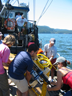
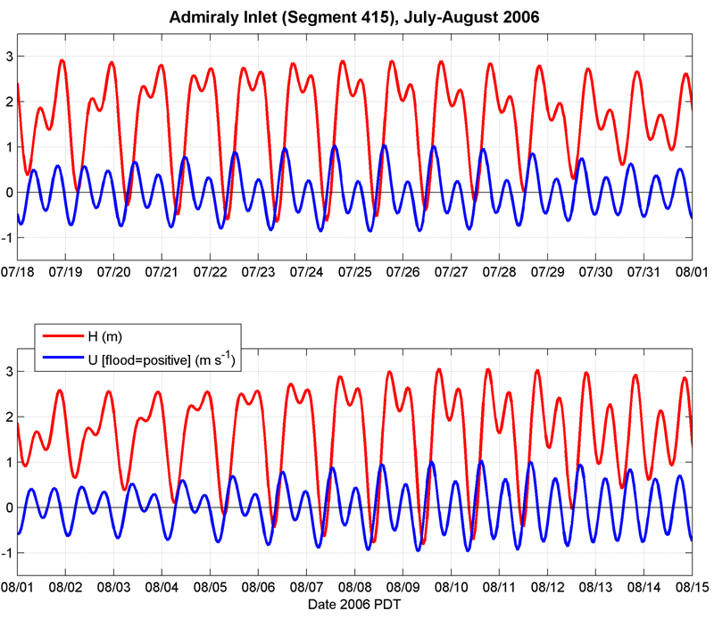

Coastal & Estuarine Fluid Dynamics
TIDES

Tidal height and tidal currents for the duration of the class. This is in the Middle of Admiralty Inlet, on eof our potential field sites. The data was created by the program PS_tides.m.